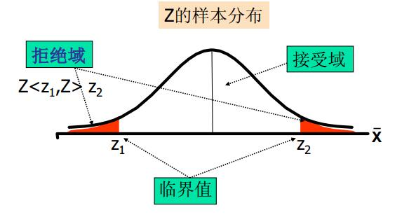

第 6 章 Hypothesis Test
本篇是第6章，内容是假设检验。
6.1 基本思想
我们还是从问题开始讨论。这回提个接地气的问题——雄安新区批复前后对该地区房价是否有差异？嗯，假设检验其实就是为了解决这类问题。假设检验的基本思想——我们有样本，但是无法获得总体，需要对总体的分布形式或分布参数事先作出某种假设，然后根据样本观测值，运用统计分析的方法来检验这一假设是否正确。分解开来，假设检验=假设+检验（或者假设检验）。假设(hypothesis)——对总体的参数的具体数值（或分布形式）所作的陈述（总体参数包括总体均值、比例、 方差等，分析之前必需陈述）。假设检验(hypothesis test)—先对总体的参数（ 或分布形式）提出某种假设，然后利用样本信息判断假设是否成立的过程（有参数检验和非参数检验；逻辑上运用反证法， 统计上依据小概率原理）。如图。
假设检验的思想还可以去搜索Fisher 显著性检验的思想(女士品茶试验)的故事深深体会，这里就不详述了。有兴趣的同学可以点击下文的科学网链接查看。
6.2 原假设和备择假设
从前面的介绍我们知道，假设检验的第一步是建立假设。那么假设分为两种（原假设和备择假设）。那么这二者具体又是什么呢？
- 原假设(null hypothesis)——原假设又称“ 0假设”，总是有符号=， \(\geq\)或\(\leq\)，表示为 \(H_0\)。是研究者想收集证据予以反对的假设（生产实践中常对应正常情形，如均值与设计一致）；一般来说，原假设是一旦拒绝便要采取行动的假设。因此， 原假设总是“受到保护的假设” ，没有充分的证据是不能拒绝原假设的。例如，对一家信誉很好的工厂的产品进行检验，原假设一般是“ 产品合格”。
- 备择假设(alternative hypothesis)——研究者想收集证据予以支持的假设， 一旦发生就要采取行动， 是与原假设对立的假设，也称“研究假设”，总是有符号\(\neq\)， > 或 <，表示为 \(H_1\)。
总结起来就是，原假设是统计学史上最悲催角色——它从一开始诞生，就是为了被科学家们发好人卡拒绝而存在的一个假设。备择假设才是科学家们追求的白富美。
搞明白了这两个假设，下一步我们做假设检验的时候，就要先提出假设了，这里给了一些提出假设的要点： > * 原假设和备择假设是一个完备事件组， 而且相互对立（在一项假设检验中， 原假设和备择假设必有一个成立， 而且只有一个成立）。 > * 先确定备择假设， 再确定原假设。 > * 等号“ =” 总是放在原假设上。 > * 因研究目的不同， 对同一问题可能提出不同的假设（ 也可能得出不同的结论）。
同时在实际应用中，我们有不同的需求，因此又有双侧检验和单侧检验的区分。 > * 双侧检验——备择假设没有特定的方向性，并含有符号“=”的假设检验，称为双侧检验或双尾检验(two-tailed test) > * 单侧检验——备择假设具有特定的方向性，并含有符号“>”或“<”的假设检验，称为单侧检验或单尾检验(one-tailed test)。其中备择假设的方向为“<”，称为左侧检验，备择假设的方向为“>”，称为右侧检验。
原假设与备择假设形式： > * 双边检验：\(H_0: \mu=2,H_1: \mu\neq2\)。 > * 单边检验：左侧检验——\(H_0: \mu\ge2,H_1: \mu<2\)，右侧检验——\(H_0: \mu\le2,H_1: \mu>2\)。
所见即所得，用一张图来表示假设检验过程。
所以拒绝原假设的理由是假设检验中的小概率原理。那么什么是小概率？
- 在一次试验中， 一个几乎不可能发生的事件发生的概率。
- 在一次试验中小概率事件一旦发生， 我们就有理由拒绝原假设。
- 小概率由研究者事先确定。
所以拒绝\(H_0\)的理由就是

6.3 第一类错误和第二类错误
上文介绍了假设检验的过程，但是假设检验过程会不会出现错误呢？其实大家仔细分析拒绝原假设的理由就会发现问题了。通常情况下原假设是小概率事件，但是小概率事件≠0概率事件。小概率事件不是不发生，而是发生概率较小。就像天气预报说明天有99%的可能不下雨，结果1%的可能性成为了事实，明天下雨了。因此假设检验中会有两类错误（弃真错误和取伪错误）经常出现。
（1）第一类错误(弃真错误)：
- 原假设为真时拒绝原假设。
- 第一类错误的概率为\(\alpha\)（没错，就是它，我们的好朋友，小\(\alpha\)。咳咳咳，就是显著性水平，一般由研究者事先指定，常用的值有0.01, 0.05, 0.10）。
（2）第二类错误（取伪错误）：
- 原假设为假时未拒绝原假设。
- 第二类错误的概率记为\(\beta\)。
\(\alpha\)和\(\beta\)的关系——\(\alpha\)和\(\beta\)的关系就像翘翘板，\(\alpha\)小\(\beta\)就大，\(\alpha\)大\(\beta\)就小。所以两类错误不可能同时发生（第一类只在\(H_0\)为真时发生，第而类只在\(H_0\)为假时发生）。
影响\(\beta\)的因素： > * 总体参数的真值。 > * 显著性水平\(\alpha\)（当\(\alpha\)减少时增大）。 > * 总体标准差\(\sigma\)（当\(\sigma\)增大时增大）。 > * 样本容量n（当n减少时增大）。
6.4 统计量与拒绝域
讲了这么多，但是还没有介绍假设检验的计算过程。假设检验的过程依赖于两个重要数学概念（统计量与拒绝域，前面已经有稍微提到了）。这里再做具体介绍。检验统计量(test statistic)——根据样本观测结果计算得到的，并据以对原假设和备择假设作出决策的某个样本统计量，是对样本估计量的标准化结果（原假设\(H_0\)为真，点估计量的抽样分布）。标准化的检验统计量公式为：标准化的检验统计量=(点估计量-假设值)/点估计量的抽样标准差
显著性水平和拒绝域的三种情况。
- 双侧检验：
- 左侧检验：
- 右侧检验：
统计量落在拒绝域时，我们就可以拒绝原假设。具体如下：
- 给定显著性水平\(\alpha\)，查表得出相应的临界值\(z_{\alpha},z_{\alpha/2},t_{\alpha},t_{\alpha/2},\cdots\)。
- 将检验统计量的值与\(\alpha\)水平的临界值进行比较。
- 作出决策：双侧检验——|统计量| > 临界值，拒绝\(H_0\)；左侧检验——统计量 < 临界值，拒绝\(H_0\)；右侧检验——统计量 > 临界值，拒绝\(H_0\)。
6.5 利用p值进行决策
如何利用假设检验解决实际问题？很重要的一个应用是在决策上。就如标题说的，利用p值进行决策。那么什么是p值?p值(p-value)：在一个假设检验问题中，拒绝原假设的最小显著性水平。
- 在原假设为真的条件下，检验统计量的观察值大于或等于其计算值的概率(双侧检验为分布中检验统计量两侧面积的总和;单侧检验为分布中检验统计量相应单侧面积）。
- 反映实际观测到的数据与原假设\(H_0\)之间的一致程度。
- 被称为观察到的（或实测的）显著性水平。
- 决策规则： 若p值<\(\alpha\)， 拒绝\(H_0\)。
- p值法步骤（以大样本均值为例），将样本统计量转换成检验统计量z。
- 计算p值： Z为标准正态分布随机变量（p值=\((\left|Z\right|\ge z)\)(双侧),p值=\((Z\le z)\)(左侧),p值=\((Z\ge z)\)(右侧)）
- 比较p值和\(\alpha\)： 如果\(\alpha \leq p\)值，拒绝\(H_0\); 如果\(\alpha<\)p值，不能拒绝\(H_0\)。
- 假设检验结论的表述
假设检验的目的就在于试图找到拒绝原假设的证据， 而不在于证明什么是正确的。
- 拒绝原假设时结论是清楚的。
- 当不拒绝原假设时——并未给出明确的结论，不能说原假设是正确的， 也不能说它不是正确的。但也未说它不是10。 我们只能说样本提供的证据还不足以推翻原假设。
- 假设检验步骤的总结
- 陈述原假设和备择假设。
- 从所研究的总体中抽出一个随机样本。
- 确定一个适当的检验统计量， 并利用样本数据算出其具体数值。
- 确定一个适当的显著性水平， 并计算出其临界值， 指定拒绝域。
- 将统计量的值与临界值进行比较， 作出决策——统计量的值落在拒绝域，拒绝\(H_0\)，否则不拒绝\(H_0\)，也可以直接利用p值作出决策。
6.6 一个总体参数的检验
前面的理论讲的差不多了，又到了典型总体参数的检验内容的介绍了。依旧是先一个总体参数的检验（总体均值、总体比例、总体方差）。
- 总体均值的检验(大样本：\(n\geq30\))，使用z检验统计量：
\(\sigma^2\)已知：\(z=\frac{\bar x-\mu_0}{\sigma/\sqrt{n}}\sim N(0,1)\)。
\(\sigma^2\)未知：\(z=\frac{\bar x-\mu_0}{s/\sqrt{n}}\sim N(0,1)\)。
- 总体均值的检验(正态总体小样本)，检验统计量：
\(\sigma^2\)已知：\(z=\frac{\bar x-\mu_0}{\sigma/\sqrt{n}}\sim N(0,1)\)。
\(\sigma^2\)未知：\(t=\frac{\bar x-\mu_0}{s/\sqrt{n}}\sim t(n-1)\)。
- 总体比例的检验
假定条件：
- 总体服从二项分布；
- 可用正态分布来近似(大样本)。
检验的Z统计量：\(z=\frac{\bar q-p_0}{\sqrt{\frac{p_0(1-p_0)}{n}}}\sim N(0,1)\)，\(p_0\)为假设的总体比例。
- 总体方差的检验
检验一个总体的方差或标准差，假设总体近似服从正态分布，使用\(\chi^2\)分布。检验统计量：
\[\chi^2=\frac{(n-1)s^2}{\sigma_0^2}\sim \chi^2(n-1)\]
这里顺带提下作为统计推断的两大分支的区间估计和假设检验的关系。
- 过程相似：如果假设均值在95%的置信区间之外，双边检验将拒绝原假设（显著性水平为5%）。
- 逻辑不同：置信区间——不知道均值多少而要估计它；假设检验: 假定一个均值要看数据是否支持这个假设。
另外还是要谈一谈统计学与实际问题——这里谈的是统计显著性和实际显著性。一个被拒绝的原假设意味着有统计显著性，但未必有实际显著性。这种情况常发生在大样本或精确测量场合，如Kepler的行星运行第一定律：行星轨道是椭圆的，当时吻合程度很好，100年后，仪器更高级、测量更精确，该假设被拒绝，因为行星间交互作用导致摄动。因此不要盲目使用统计显著性。此外，显著性水平\(\alpha\)的选择也是个很关键的问题。一般来说：
- \(\alpha\)不宜过小，否则第二类错误概率会较大。
- \(\alpha\)的选择与判断发生错误时要付出的代价大小有关。
- \(\alpha\)的选择是决策问题。
6.7 两个总体参数的检验
讲完了一个总体参数，照例来讲就两个总体参数（两个总体均值之差，两个总体比例之差，两个总体方差比）。
- 独立大样本两总体均值之差检验
假定条件：
- 两个样本是独立的随机样本。
- 大样本(\(n_1\ge30\)和\(n_2\ge30\))。
检验统计量：
\(\sigma_1^2,\sigma_2^2\)已知：
\[z=\frac{(\bar x_1-\bar x_2)-(\mu_1-\mu_2)}{\sqrt{\frac{\sigma_1^2}{n_1}+\frac{\sigma_2^2}{n_2}}}\sim N(0,1)\]。
\(\sigma_1^2,\sigma_2^2\)未知：
\[z=\frac{(\bar x_1-\bar x_2)-(\mu_1-\mu_2)}{\sqrt{\frac{s_1^2}{n_1}+\frac{s_2^2}{n_2}}}\sim N(0,1)\]。
- 正态总体独立小样本均值之差检验（\(\sigma_1^2,\sigma_2^2\)已知）
假定条件：
- 两个独立的小样本。
- 两个总体都是正态分布。
- \(\sigma_1^2,\sigma_2^2\)已知。
检验统计量:
\[z=\frac{(\bar x_1-\bar x_2)-(\mu_1-\mu_2)}{\sqrt{\frac{\sigma_1^2}{n_1}+\frac{\sigma_2^2}{n_2}}}\sim N(0,1)\]。
- 正态总体独立小样本均值之差检验(\(\sigma_1^2,\sigma_2^2\)未知但\(\sigma_1^2=\sigma_2^2\))
假定条件：
- 两个独立的小样本。
- 两个总体都是正态分布。
- \(\sigma_1^2,\sigma_2^2\)未知但相等，即\(\sigma_1^2=\sigma_2^2\)。
检验统计量：
\[t=\frac{(\bar x_1-\bar x_2)-(\mu_1-\mu_2)}{s_p\sqrt{\frac{1}{n_1}+\frac{1}{n_2}}}\]
其中\(s_p=\frac{(n_1-1)s_1^2+(n_2-1)s_2^2}{n_1+n_2-2}\)，自由度：\(n_1+n_2-2\)。
- 两个总体均值之差的检验(\(\sigma_1^2,\sigma_2^2\)未知且不相等\(\sigma_1^2\ne\sigma_2^2\))
假定条件：
- 两个总体都是正态分布。
- \(\sigma_1^2,\sigma_2^2\)未知且不相等，即\(\sigma_1^2\ne\sigma_2^2\)。
- 样本容量相等，\(n_1=n_2=n\)。
检验统计量：
\[t=\frac{(\bar x_1-\bar x_2)-(\mu_1-\mu_2)}{\sqrt{\frac{s_1^2}{n_1}+\frac{s_2^2}{n_2}}}=\frac{(\bar x_1-\bar x_2)-(\mu_1-\mu_2)}{\sqrt{\frac{s_1^2+s_2^2}{n}}}\]
自由度：\(n_1+n_2-2=2(n-1)\)。
- 两个总体均值之差的检验(\(\sigma_1^2,\sigma_2^2\)未知且不相等\(\sigma_1^2\ne\sigma_2^2\))
假定条件：
- 两个总体都是正态分布。
- \(\sigma_1^2,\sigma_2^2\)未知且不相等，即\(\sigma_1^2\ne\sigma_2^2\)。
- 样本容量不相等，\(n_1\ne n_2\)。
检验统计量：
\[t=\frac{(\bar x_1-\bar x_2)-(\mu_1-\mu_2)}{\sqrt{\frac{s_1^2}{n_1}+\frac{s_2^2}{n_2}}}\]
自由度：最接近v的整数——\(v=\frac{(\frac{s_1^2}{n_1}+\frac{s_2^2}{n_2})^2}{\frac{(s_1^2/n_1)^2}{n_1-1}+\frac{(s_2^2/n_2)^2}{n_2-1}}\)。
- 两个总体均值之差的检验(匹配样本)
假定条件:
- 两个总体配对差值构成的总体服从正态分布。
- 配对差是由差值总体中随机抽取的。
- 数据配对或匹配(重复测量 (前/后))。
样本差值均值
\[\bar d=\frac{\sum_{i=1}^n d_i}{n_d}\],
样本差值标准差值
\[s_d=\sqrt{\frac{\sum_{i=1}^n(d_i-\bar d)^2}{n_d-1}}\]。
大样本检验统计量：
\[z=\frac{\bar d-d_0}{s_d/\sqrt{n_d}}\sim N(0,1)\]。
小样本检验统计量：
\[t=\frac{\bar d-d_0}{s_d/\sqrt{n_d}}\sim t(n-1)\]。
- 两个总体比例之差的检验
假定条件：
- 两个总体都服从二项分布。
- 可以用正态分布来近似。
检验统计量：
检验\(H_0:p_1-p_2=0\)，
\[z=\frac{\bar p_1-\bar p_2}{\sqrt{\bar p(1-\bar p)(\frac{1}{n_1}+\frac{1}{n_2})}}\]，
其中\(\bar p=\frac{x_1+x_2}{n_1+n_2}=\frac{\bar p_1n_1+\bar p_2n_2}{n_1+n_2}\)。
检验\(H_0:p_1-p_2=d_0\)，
\[z=\frac{(\bar p_1-\bar p_2)-d_0}{\sqrt{\frac{\bar p_1(1-\bar p_1)}{n_1}+\frac{\bar p_2(1-\bar p_2)}{n_2}}}\]。
- 两个总体方差比的检验(F检验)
假定条件：
- 两个总体都服从正态分布。
- 两个独立的随机样本。
检验统计量：
\[F=\frac{s_1^2}{s_2^2}\sim F(n_1-1,n_2-1)\]
或
\[F=\frac{s_2^2}{s_1^2}\sim F(n_2-1,n_1-1)\]。
最后的总结就是如下图。
最后的最后，回到开头提的问题——雄安新区。该问题其实是两个总体参数的检验问题——两个总体均值之差的问题（两个总体分别是批复前的房价和批复后的房价）。所以如果要讨论该问题，可以考虑从批复前后的房价，抽取配对大样本或小样本(楼盘房价）进行假设检验，这样我们就能在统计学上证明这件事对雄安房价的显著影响啦。本篇涉及的R语言内容较少，还是老规矩，放到后面的第14章去讨论。